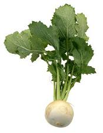

Nabo

La siembra
Fecha: Durante todo el ano.
Forma: Se siembra directamente sobre el cantero, en líneas o al voleo.
Distancias: Dejar entre 5 y 10 centímetros alrededor de cada planta.
Cantidad de semillas (para 10m2): 2 gramos
¿Qué tenemos que hacer para cuidar nuestro cultivo?
- Es un cultivo resistente a las heladas.
- Se logran mejores cosechas si se siembra en otoño y en invierno.
- Cuidar la profundidad de siembra y cubrir el cantero hasta que germine.
- Dejar el espacio recomendado entre las plantas a fin de que tengan lugar para crecer y así evitar enfermedades.
- Sacar los yuyos para evitar la competencia.
- El riego es importante cuando se está engrosando la raíz, especialmente en verano.
La cosecha
- La cosecha se inicia entre los 30 y los 45 días a partir de la siembra.
- Se recogen cuando las raíces tienen de 5 a 8 centímetros de diámetro.
Producción de semillas
Dejar una planta sana y vigorosa par que dé flor y así poder cosechar las semillas.